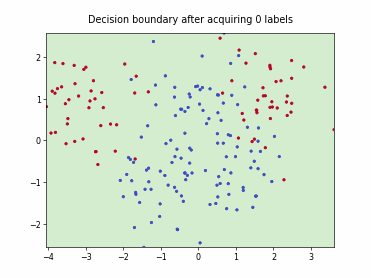
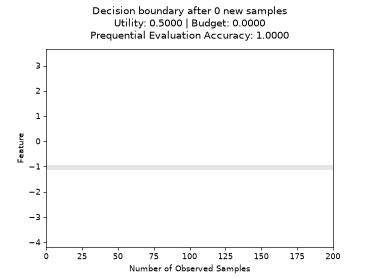

skactiveml.base.SkactivemlClassifier#
- class skactiveml.base.SkactivemlClassifier(classes=None, missing_label=nan, cost_matrix=None, random_state=None)[source]#
Bases:
ClassifierMixin,BaseEstimator,ABCSkactiveml Classifier
Base class for scikit-activeml classifiers such that missing labels, user-defined classes, and cost-sensitive classification (i.e., cost matrix) can be handled.
- Parameters:
- classesarray-like of shape (n_classes), default=None
Holds the label for each class. If None, the classes are determined during the fit.
- missing_labelscalar, string, np.nan, or None, default=np.nan
Value to represent a missing label.
- cost_matrixarray-like of shape (n_classes, n_classes)
Cost matrix with cost_matrix[i,j] indicating cost of predicting class classes[j] for a sample of class classes[i]. Can be only set, if classes is not None.
- random_stateint or RandomState instance or None, default=None
Determines random number for predict method. Pass an int for reproducible results across multiple method calls.
- Attributes:
- classes_array-like of shape (n_classes,)
Holds the label for each class after fitting.
- cost_matrix_array-like,of shape (classes, classes)
Cost matrix after fitting with cost_matrix_[i,j] indicating cost of predicting class classes_[j] for a sample of class classes_[i].
Methods
fit(X, y[, sample_weight])Fit the model using X as training data and y as class labels.
Get metadata routing of this object.
get_params([deep])Get parameters for this estimator.
predict(X)Return class label predictions for the test samples X.
Return probability estimates for the test data X.
score(X, y[, sample_weight])Return the mean accuracy on the given test data and labels.
set_fit_request(*[, sample_weight])Request metadata passed to the
fitmethod.set_params(**params)Set the parameters of this estimator.
set_score_request(*[, sample_weight])Request metadata passed to the
scoremethod.- abstract fit(X, y, sample_weight=None)[source]#
Fit the model using X as training data and y as class labels.
- Parameters:
- Xmatrix-like, shape (n_samples, n_features)
The sample matrix X is the feature matrix representing the samples.
- yarray-like, shape (n_samples) or (n_samples, n_outputs)
It contains the class labels of the training samples. The number of class labels may be variable for the samples, where missing labels are represented the attribute missing_label.
- sample_weightarray-like, shape (n_samples) or (n_samples, n_outputs)
It contains the weights of the training samples’ class labels. It must have the same shape as y.
- Returns:
- self: skactiveml.base.SkactivemlClassifier,
The skactiveml.base.SkactivemlClassifier object fitted on the training data.
- get_metadata_routing()#
Get metadata routing of this object.
Please check User Guide on how the routing mechanism works.
- Returns:
- routingMetadataRequest
A
MetadataRequestencapsulating routing information.
- get_params(deep=True)#
Get parameters for this estimator.
- Parameters:
- deepbool, default=True
If True, will return the parameters for this estimator and contained subobjects that are estimators.
- Returns:
- paramsdict
Parameter names mapped to their values.
- predict(X)[source]#
Return class label predictions for the test samples X.
- Parameters:
- Xarray-like of shape (n_samples, n_features)
Input samples.
- Returns:
- ynumpy.ndarray of shape (n_samples,)
Predicted class labels of the test samples X.
- predict_proba(X)[source]#
Return probability estimates for the test data X.
- Parameters:
- Xarray-like of shape (n_samples, n_features)
Test samples.
- Returns:
- Pnumpy.ndarray of shape (n_samples, classes)
The class probabilities of the test samples. Classes are ordered according to self.classes_.
- score(X, y, sample_weight=None)[source]#
Return the mean accuracy on the given test data and labels.
- Parameters:
- Xarray-like of shape (n_samples, n_features)
Test samples.
- yarray-like of shape (n_samples,)
True labels for X.
- sample_weightarray-like of shape (n_samples,), default=None
Sample weights.
- Returns:
- scorefloat
Mean accuracy of self.predict(X) regarding y.
- set_fit_request(*, sample_weight: bool | None | str = '$UNCHANGED$') SkactivemlClassifier#
Request metadata passed to the
fitmethod.Note that this method is only relevant if
enable_metadata_routing=True(seesklearn.set_config()). Please see User Guide on how the routing mechanism works.The options for each parameter are:
True: metadata is requested, and passed tofitif provided. The request is ignored if metadata is not provided.False: metadata is not requested and the meta-estimator will not pass it tofit.None: metadata is not requested, and the meta-estimator will raise an error if the user provides it.str: metadata should be passed to the meta-estimator with this given alias instead of the original name.
The default (
sklearn.utils.metadata_routing.UNCHANGED) retains the existing request. This allows you to change the request for some parameters and not others.Added in version 1.3.
Note
This method is only relevant if this estimator is used as a sub-estimator of a meta-estimator, e.g. used inside a
Pipeline. Otherwise it has no effect.- Parameters:
- sample_weightstr, True, False, or None, default=sklearn.utils.metadata_routing.UNCHANGED
Metadata routing for
sample_weightparameter infit.
- Returns:
- selfobject
The updated object.
- set_params(**params)#
Set the parameters of this estimator.
The method works on simple estimators as well as on nested objects (such as
Pipeline). The latter have parameters of the form<component>__<parameter>so that it’s possible to update each component of a nested object.- Parameters:
- **paramsdict
Estimator parameters.
- Returns:
- selfestimator instance
Estimator instance.
- set_score_request(*, sample_weight: bool | None | str = '$UNCHANGED$') SkactivemlClassifier#
Request metadata passed to the
scoremethod.Note that this method is only relevant if
enable_metadata_routing=True(seesklearn.set_config()). Please see User Guide on how the routing mechanism works.The options for each parameter are:
True: metadata is requested, and passed toscoreif provided. The request is ignored if metadata is not provided.False: metadata is not requested and the meta-estimator will not pass it toscore.None: metadata is not requested, and the meta-estimator will raise an error if the user provides it.str: metadata should be passed to the meta-estimator with this given alias instead of the original name.
The default (
sklearn.utils.metadata_routing.UNCHANGED) retains the existing request. This allows you to change the request for some parameters and not others.Added in version 1.3.
Note
This method is only relevant if this estimator is used as a sub-estimator of a meta-estimator, e.g. used inside a
Pipeline. Otherwise it has no effect.- Parameters:
- sample_weightstr, True, False, or None, default=sklearn.utils.metadata_routing.UNCHANGED
Metadata routing for
sample_weightparameter inscore.
- Returns:
- selfobject
The updated object.
Examples using skactiveml.base.SkactivemlClassifier#
Batch Active Learning by Diverse Gradient Embedding (BADGE)

Batch Bayesian Active Learning by Disagreement (BatchBALD)


Fast Active Learning by Contrastive UNcertainty (FALCUN)

Batch Density-Diversity-Distribution-Distance Sampling



Monte-Carlo EER with Misclassification-Loss


Query-by-Committee (QBC) with Kullback-Leibler Divergence


Dual Strategy for Active Learning
Uncertainty Sampling with Least-Confidence
Uncertainty Sampling with Margin

Value of Information on Labeled Samples
Value of Information on Unlabeled Samples
Cognitive Dual-Query Strategy with Fixed-Uncertainty
Cognitive Dual-Query Strategy with Random Sampling

Cognitive Dual-Query Strategy with Randomized-Variable-Uncertainty
Cognitive Dual-Query Strategy with Variable-Uncertainty
Randomized-Variable-Uncertainty
Density Based Active Learning for Data Streams
Probabilistic Active Learning in Datastreams